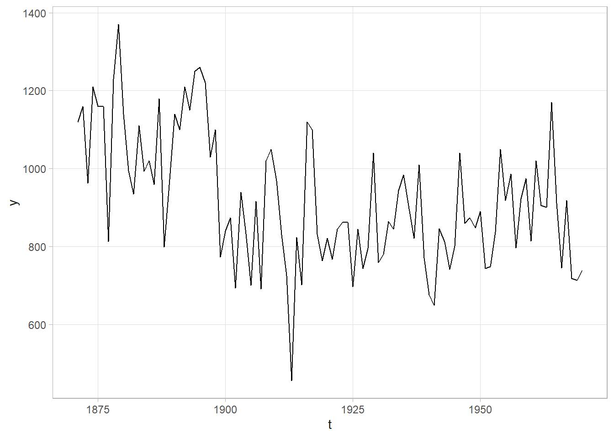
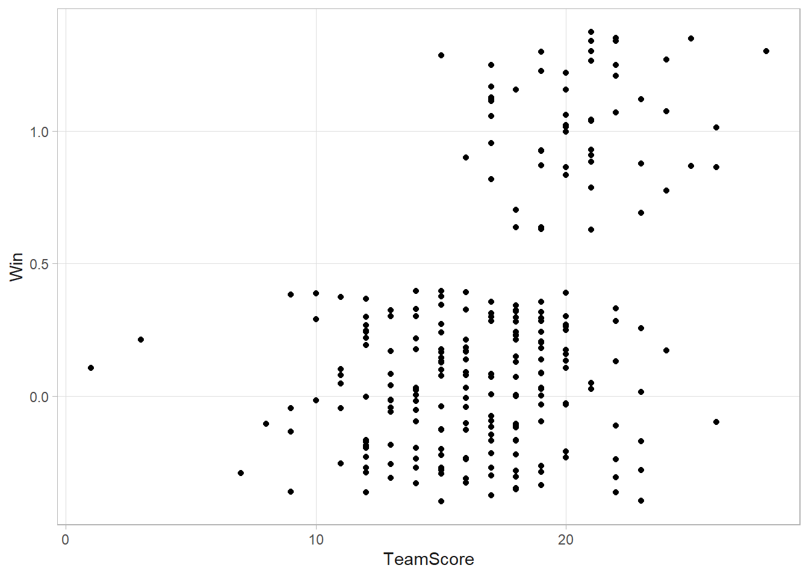

3.8 Discrete Cases and the Beta Binomial
Suppose \(y = 35\) of \(n = 50\) seeds germinate within 72hrs. What is the expected germination probability, \(p\), of a single seed? Seed germination can be modeled as a Bernoulli data generating process where events occur with probability, \(p\), and the observed \(y = \sum_i^n y_i\) is the sum of \(n\) Bernoulli trials. The question becomes what \(p\) was used in the Bernoulli function?
The classical approach is to construct a 95% CI around \(p\) with a one-sample proportion test.
##
## 1-sample proportions test with continuity correction
##
## data: y out of n, null probability 0.5
## X-squared = 7.22, df = 1, p-value = 0.00721
## alternative hypothesis: true p is not equal to 0.5
## 95 percent confidence interval:
## 0.5521660 0.8171438
## sample estimates:
## p
## 0.7The Bayesian approach is to posit an expected distribution of \(p\) prior to observing the data, then update the distribution based on the relative likelihood of observing the data given the values in the distribution. The likelihood of \(y\) events in \(n\) trials follows the binomial distribution, \(y|p \sim \text{Bin}(n, p)\). In practice, Bayesian analyses take advantage of proportionality and would the binomial coefficient.
\[ \begin{align} f(y|p) &= {n \choose y} p^y (1-p)^{n-y} \\ &\propto p^y (1-p)^{n-y} \end{align} \]
The Bayesian approach to estimating \(p\) is to treat it as a probability distribution, choosing a prior distribution and updating it with observed data. Take a uniform prior for \(p\) as a first approximation. That is, all values of \(p\) are equally likely.
# Explore the parameter space [0,1] in .01 increments
p <- seq(0, 1, by = 0.01)
# The prior distribution is uniform, 1/101 for all parameter values.
prior <- rep(1/length(p), length(p))
# Binomial likelihood for the 101 p's.
likelihood <- dbinom(35, 50, p)
# Bayes' Theorem: posterior = joint density / marginal density.
joint_density <- likelihood * prior
marginal_density <- sum(joint_density)
posterior <- joint_density / marginal_density
# 95% credible interval
(pi <- sum(posterior * p) / sum(posterior))
## [1] 0.6923077
(ci <- p[c(min(which(cumsum(posterior) > .025)),
max(which(cumsum(posterior) < .975)))])
## [1] 0.56 0.80
tibble(p, prior, posterior) %>%
pivot_longer(c(prior, posterior)) %>%
ggplot(aes(x = p)) +
geom_line(aes(y = value, color = name)) +
geom_area(data = tibble(p, posterior, y = if_else(p <= ci[1], posterior, NA_real_)),
aes(y = y), fill = "#F8766D") +
geom_area(data = tibble(p, posterior, y = if_else(p >= ci[2], posterior, NA_real_)),
aes(y = y), fill = "#F8766D") +
geom_vline(aes(xintercept = pi), color = "#F8766D") +
scale_x_continuous(breaks = round(c(seq(0, 1, 1), ci, pi), 4)) +
labs(y = "density", color = NULL, title = "From Prior to Posterior",
subtitle = "Data: y=35, n=50.")
This was good, but we could have done better. The uniform prior took on discrete values, so the 95% CI was constrained to the one of those values. Instead, you can model continuous probability values with the Beta distribution, \(p \sim \text{Beta}(a, b)\).
\[ \begin{align} f(p) &= \frac{1}{\text{B}(a,b)} p^{a-1} (1-p)^{b-1} \\ &\propto p^{a-1} (1 - p)^{b -1} \end{align} \]
where \(a\) is the success count, \(b\) the failure count, and \(\text{B} = \frac{\Gamma(a)\Gamma(b)}{\Gamma(a+b)}\) is the beta function. Use Bayes’ formula to derive the posterior distribution, \(f(p|y)\). This time we will take advantage of proportionality.
\[ \begin{align} f(p|y) =&\propto f(y|p)f(p) \\ &\propto p^y (1-p)^{n-y} p^{a-1} (1 - p)^{b -1} \\ &\propto p^{a+y-1}(1-p)^{b+n-y-1} \\ &\sim \text{Beta}(a + y, b + (n - y)) \end{align} \]
The expected value of the Beta distribution is \(a / (a + b)\), or in this case,
\[ E(p|y) = \frac{a+y}{(a+y)+(b+(n-y))} = \frac{a + y}{a + b + n} = \frac{a + n \bar{y}}{a + b + n} \]
As the sample size increases, \(a\) and \(b\) become less important and \(E(p|y) \rightarrow \bar{y}\).
In the absence of any other information, use a uniform distribution as the prior again, but this time use \(\text{Beta}(a = 1, b = 1)\). The posterior expected value is \(E(p|y) = \frac{1 + 35}{(1+35) + (1 + (50 - 35))}\). The posterior distribution is \(p|y = \text{Beta}(1 + 35, 1 + 15)\).
# Explore the parameter space [0,1] in .01 increments
p <- seq(0, 1, by = 0.01)
# The prior distribution is uniform, Beta(1, 1).
a <- 1
b <- 1
prior <- dbeta(p, a, a)
# Instead of calculating the likelihood, joint density, marginal density, and
# finally the posterior, we can go straight to the posterior.
a <- 1 + 35
b <- 1 + (50-35)
posterior <- dbeta(p, a, b)
# 95% credible interval. This time we don't need p - we can go straight to the soln.
(pi <- a / (a + b))
## [1] 0.6923077
(ci <- qbeta(c(.025, .975), a, b))
## [1] 0.5617113 0.8088960
tibble(p, prior, posterior) %>%
pivot_longer(c(prior, posterior)) %>%
ggplot(aes(x = p)) +
geom_line(aes(y = value, color = name)) +
geom_area(data = tibble(p, posterior, y = if_else(p <= ci[1], posterior, NA_real_)),
aes(y = y), fill = "#F8766D") +
geom_area(data = tibble(p, posterior, y = if_else(p >= ci[2], posterior, NA_real_)),
aes(y = y), fill = "#F8766D") +
geom_vline(aes(xintercept = pi), color = "#F8766D") +
scale_x_continuous(breaks = round(c(seq(0, 1, 1), ci, pi), 4)) +
labs(y = "density", color = NULL, title = "From Prior to Posterior, using Beta(1, 1) prior.",
subtitle = "Data: y=35, n=50.")
Suppose in a second experiment 63 of 80 seeds germinate. Update your posterior.
a <- 1 + 35 + 63
b <- 1 + (50-35) + (80-63)
# 95% credible interval. This time we don't need p - we can go straight to the soln.
a / (a + b)
## [1] 0.75
qbeta(c(.025, .975), a, b)
## [1] 0.6730063 0.8198209
# probability that p > .80
pbeta(.80, a, b, lower.tail = FALSE)
## [1] 0.08699946
# posterior predictive probability that x >= 80 of 100 seeds will germinate
sample_beta <- rbeta(1000, a, b)
sample_binom <- rbinom(1000, 100, sample_beta)
mean(sample_binom >= 80)
## [1] 0.209If instead of observing a single proportion of \(y\) events in \(n\) trials, you observe \(j\) proportions of \(y_i\) events in \(n_i\) trials? E.g., suppose 100 persons report the number of days per week they consume alcohol (0 - 7).
days <- 0:7
y <- c(22, 6, 18, 23, 18, 10, 3, 0)
# Actual drinking days per week
(y_days <- sum(days * y))## [1] 251## [1] 700## [1] 0.3589744## [1] 0.3239070 0.3948028The posterior mean estimated probability of having a drink on any given day is .36, 95% CI (.32, .39). The predictive distribution of \(\tilde{y}\) is \(f(\tilde{y}|y) = \int f(\tilde{y}|p) f(p|y) dp\). Instead of integrating for the solution, you can run a simulation. Sample a thousand \(p\)’s from the posterior beta distribution, then pipe the sampled \(p\)’s into the statistic function, in this case the binomial distribution, to get sampled \(y\)’s.
set.seed(12345)
sampled_p <- rbeta(10^3, a, b)
y_tilde <- rbinom(10^3, 7, sampled_p)
# mean and 95% CI predicted number of drinking days
mean(y_tilde)
## [1] 2.482
quantile(y_tilde, c(.025, .975))
## 2.5% 97.5%
## 0 5Simulations of statistics based on the posterior distribution is a general procedure. E.g., you might run a simulation to predict the probability of \(y = 0\) drinking days.
## [1] 0.049Use the Deviance Information Criterion (DIC) to compare group means.
\[ DIC = p_D + \overline{D(\theta)} \]
where \(p_D = \overline{D(\theta)} - D(\hat{\theta})\) and \(D(\theta) = -2 \log (f(y|\theta)) + C\).
Evaluate \(\overline{D(\theta)}\) by producing samples from each distribution and evaluating the likelihoods of the data based on each realization and taking the mean of -2 log-likelihood.
# Two samples with success rates 35/50 and 15/20
y <- c(35, 15)
n <- c(50, 20)
# Priors
a <- 1
b <- 1
# Posteriors
post <- list(
rbeta(10^3, a+y[1], b+n[1]-y[1]),
rbeta(10^3, a+y[2], b+n[2]-y[2])
)
# -2 * Mean log-likelihood
ll <-
dbinom(y[1], n[1], post[[1]], log = TRUE) +
dbinom(y[2], n[2], post[[2]], log = TRUE)
(mean_D <- mean(-2 * ll))## [1] 9.21603# D(theta-bar) is the likelihood of the data based on the posterior means of p.
(D_mean <- -2 * (
dbinom(y[1], n[1], (a+y[1]) / (a+y[1] + b+n[1]-y[1]), log = TRUE) +
dbinom(y[2], n[2], (a+y[2]) / (a+y[2] + b+n[2]-y[2]), log = TRUE)
))## [1] 7.46448## [1] 1.75155## [1] 10.96758# Repeat these steps for a single model of both groups
post_group <- rbeta(10^3, a+sum(y), b+sum(n)-sum(y))
ll_group <-
dbinom(y[1], n[1], post_group, log = TRUE) +
dbinom(y[2], n[2], post_group, log = TRUE)
(mean_D_group <- mean(-2 * ll_group))## [1] 8.608443(D_mean_group <- -2 * (
dbinom(y[1], n[1], (a+sum(y)) / (a+sum(y) + b+sum(n)-sum(y)), log = TRUE) +
dbinom(y[2], n[2], (a+sum(y)) / (a+sum(y) + b+sum(n)-sum(y)), log = TRUE)
))## [1] 7.587449## [1] 1.020994## [1] 9.629437The DIC for the two group model is 10.9675802 and for the one common group model it is 9.6294374. The DIC for one common group model is smaller, so we do not have enough statistical evidence for two groups. If the DIC for the group-specific model is at least 3 units smaller than that for the common model, there is sufficient statistical evidence for difference between groups.